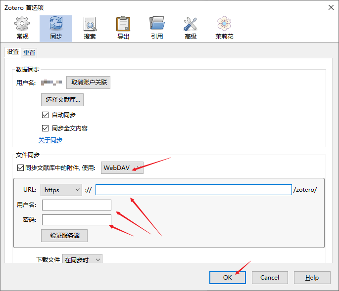
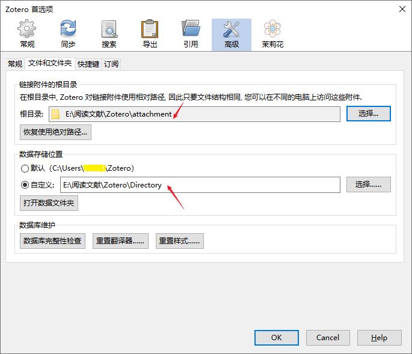
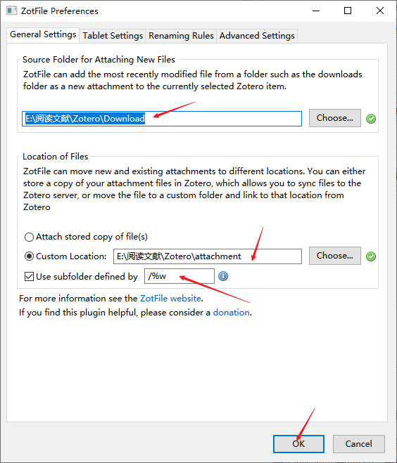
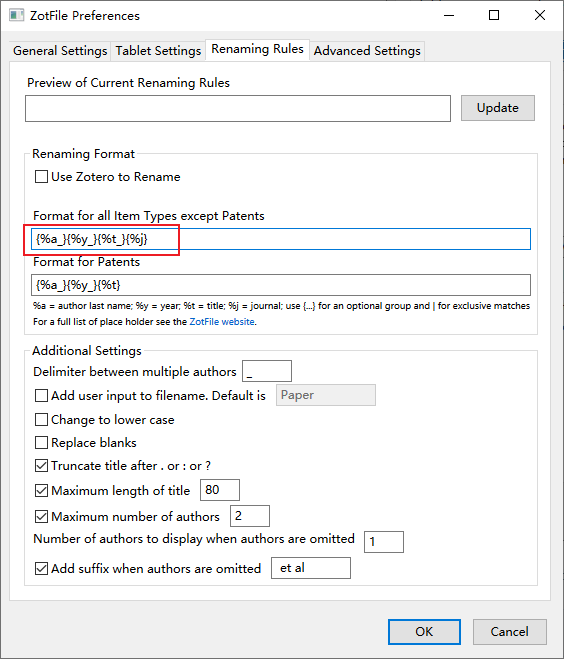

学术科研
文献管理
-
Endnote20（需使用校内或VPN下载）
-
Windows系统用户请下载Windows版安装程序(MD5:68329768bab76e834fe10a6849a2e3bb)。解压缩 EN20Inst.msi、License.dat两个文件到同一个文件夹中（不可直接放在桌面上），之后双击ENX20nst.msi文件进行安装，中途不需要输入序列号。
-
Mac系统用户请下载macOS版安装程序(MD5:e2485ea2280518d57071bd0288356923)。挂载后运行
Install EndNote 20进行安装。
-
-
Zotero
公式工具
计量软件
-
Stata [下载地址] （访问码：g0xy）
含Stata13、Stata15、Stata16三个版本，破解方法参考网络。
-
Stata优化：[连玉君profile]
-
亦可在 Stata 命令窗口依次输入：
cnssc install lxhget,lxhget profile.do，以便把该文件 copy 到你的当前工作路径下。进入输入cd即可显示当前工作路径。 -
如果在你的 Stata 安装目录下没有 profile.do 文档，可以直接将我的 profile.do 文件放到你的 Stata 安装目录下 (我的 Stata 安装目录是：D:\stata15)，但需要酌情修改你里面的内容，尤其是有关文件路径方面的设定。
-
如果在你的 Stata 安装目录下已经建立了 profile.do 文档，但需要更新一些设定，可以打开我的 profile.do 文档，截取所需放入你自己的 profile.do 文档中。Note: 有关文件路径方面的信息，可能需要酌情修改。
我的Stata packages & profile（附说明）：下载地址
-
-
R和R Studio：
R Studio：Download the RStudio IDE - RStudio
-
Python和IDE：
Python：Python Releases for Windows | Python.org
-
安装时勾选
添加到path。 -
pip速度慢的解决办法：
临时使用：可以在使用pip的时候加参数-i https://pypi.tuna.tsinghua.edu.cn/simple，例如：
pip install -i https://pypi.tuna.tsinghua.edu.cn/simple pyspider
-
永久修改：Linux下，修改 ~/.pip/pip.conf (没有就创建一个文件夹及文件。文件夹要加“.”，表示是隐藏文件夹)，Windows下，直接在user目录中创建一个pip目录，再新建文件pip.ini（例如：C:\Users\WQP\pip\pip.ini）。内容如下：
-
[global]
index-url = https://pypi.tuna.tsinghua.edu.cn/simple
[install]
trusted-host=mirrors.aliyun.com
笔记工具
-
LaTex
文献追踪与翻译
Zotero多计算机间同步配置说明
-
首选项–同步–设置—数据同步中，输入用户名密码登录，若使用坚果云，在下面文件同步中，选择使用
WebDAV，并输入WebDAV配置网址
-
首选项–高级–文件和文件夹中，数据存储位置选择自定义，一般为Zotero下的
Directory目录，链接附件的根目录选择同一Zotero下的attachment目录。 -
按下
OK后软件关闭，手动把原来的根目录转移到新目录下，然后重新打开Zotero。
-
安装插件：下载地址并解压
工具–插件–右上角齿轮按钮–Install Add-on From File，将解压后的插件一起选中加入，分别进行安装，安装后重启Zotero
-
配置Zotfile：工具–Zotfile Preferences
General Settings中，第一个地址选择根目录下的
Download文件夹，若没有可新建；第二个地址选择刚才首选项中设置的附件存放位置（即上一张图的第一个红箭头所在位置）；Use subfolder defined by中改为/%w（表示按期刊名分类，可根据自己需要更改，旁边有提示）
Rename Rules中，在
Format for all Item Types except Patents中替换为：{%a_}{%y_}{%t_}{%j}即按
作者_年份_题目_期刊名称重命名。其他设置如下图。
Advanced Settings中，选择
Always rename，其他设置如下图。
-
配置茉莉花（jasminum）
在首选项–茉莉花中，按下图配置，其他均按默认。

-
-
配置右键
找到可用的PDF时自动查找sci-hub首选项–高级–常规–设置编辑器–同意风险，在Search中搜索
pdf，找到extensions.zotero.findPDFs.resolvers项目，双击项目，在弹出的窗口中填入{"name":"Sci-Hub", "method":"GET", "url":"https://sci-hub.se/{doi}", "mode":"html", "selector":"#pdf", "attribute":"src", "automatic":true } -
关于文献库的同步：可使用坚果云的WebDAV功能，也可配置NAS自动同步，注意将
Directory及相关数据库排除在外，否则会引起冲突问题。